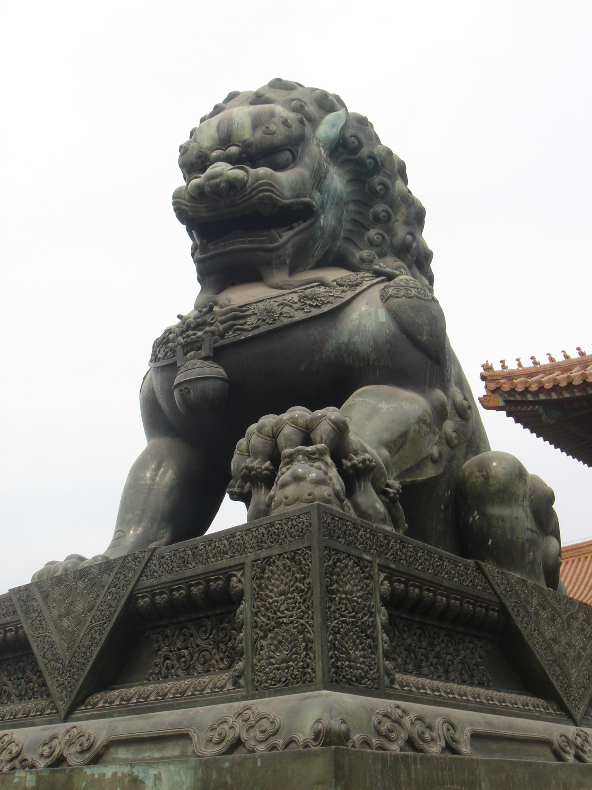
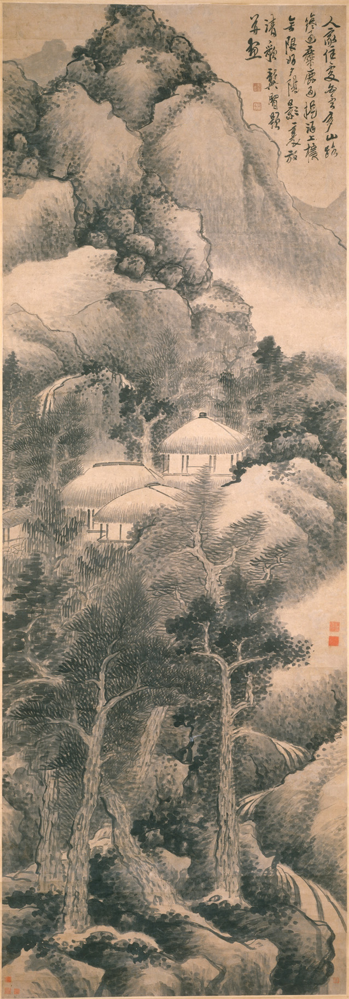

Investigación, análisis y difusión sobre China.
Una casa digital para reunir las publicaciones, series de cuadernos, boletines, convocatorias y perfiles académicos del CECH.
Publicaciones organizadas para crecer.
La propuesta separa los boletines de las series de cuadernos. Cada serie cuenta con su propia presentación, identidad visual y archivo de números publicados.

Actualidad, actividades y difusión.
Un espacio separado para boletines periódicos, comunicaciones y contenidos de coyuntura.
Explorar boletines →
China antigua y medieval.
Historia, instituciones, religión, economía y cultura material de la China antigua y medieval.
Ver serie →

Microeconomía, conducta y redes.
Modelización económica de China, riesgo sistémico, redes e interdependencia.
Ver serie →
Un sitio que se sienta académico, no genérico.
La identidad visual se apoya en el rojo institucional, tonos de papel y dorado, con referencias discretas a la cultura visual china. Las imágenes históricas funcionan como contexto, no como decoración turística.
El prototipo deja preparados espacios para la historia del CECH, líneas de investigación, autoridades, investigadores, colaboradores y vínculos institucionales.
Un espacio visible para participar.
Las convocatorias se presentan con estado, fechas y requisitos. Por ahora se muestran ejemplos de estructura, claramente marcados como demostración.
Convocatoria para jóvenes investigadores CECH 2026
La versión definitiva podrá mostrar fecha de apertura, cierre, bases, documentos descargables y enlace de postulación.
Contenido demostrativoRecepción de artículos para una serie de cuadernos.
Las convocatorias cerradas pueden conservarse como archivo histórico y referencia para futuras ediciones.
Contenido demostrativo